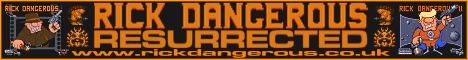
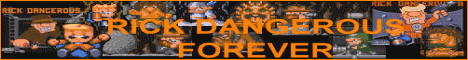

Who, What, Why?
Rick Dangerous, a super hero and a part time stamp collector, is finally making his debut over to the Playstation 2 console.
XRick is an open-source clone, known to run on modern platforms. Rewritten by bigorno between 1998 and 2002, XRick has been made available on a handful of platforms, including Linux, Windows, Amiga, QNX, gp32 and now Playstation 2.
Downloads
| Playstation 2 CDROM image here | |
| Playstation 2 ELF binary here | |
| Source code here |
Links
|  |
|  |